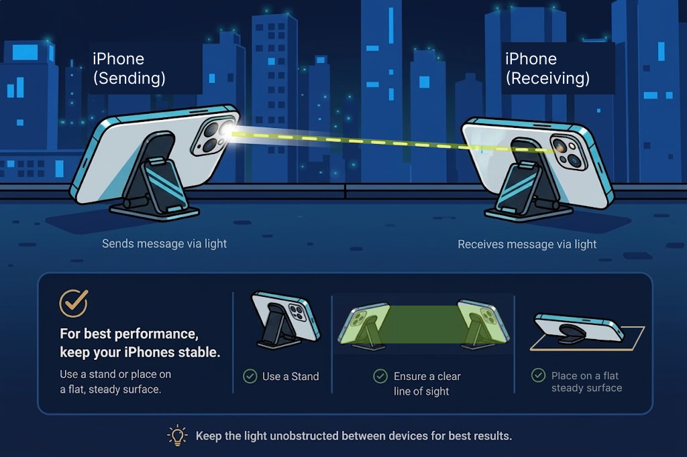

App Introduction
Four moments that explain how Morse Watcher works.


What It Does
Read and send Morse code with light.
Free Morse code translator, right on this page
Tap Converted text in the live monitor at the top of this page, type any message, and see it translated into Morse code instantly. Tap the light to watch your message flash.
Try the translator ↑Decode Morse code from a flashing light
Aim the camera at a flashlight, lamp, signal light, or another phone. Morse Watcher tracks the light, tells each flash apart as a dot or a dash, and turns the pattern into letters and words as it arrives.
Adapts to any sending speed
There is no speed to set. The decoder learns the timing of dots, dashes, and gaps from the signal itself, so it follows a slow beginner as well as a fast operator — and you can switch to custom timing when you need to.
Send Morse code with your flashlight
Type a message or dictate it, and Morse Watcher flashes it in Morse code with the iPhone flashlight using precise, even timing that another phone — or a person — can read.
One-tap SOS signal
Flash the international SOS distress pattern (··· −−− ···) with the correct Morse timing straight from the home screen, without having to remember the code.
Hear the code as you see it
A sidetone beeps while the light is on, so you can follow the rhythm by ear and learn to recognise letters the way radio operators do.
Works offline, with Siri and Shortcuts
Everything runs on your iPhone, with no account and no connection required. Start watching, send a message, or flash SOS from Siri and the Shortcuts app.
Who It's For
When light is the only signal.
Emergencies and the outdoors
Hikers, campers, and boaters can signal across a valley or a bay after dark when there is no phone coverage — and recognise an SOS when they see one.
Ham radio and Morse learners
Practise reading CW by sight and sound, check your own sending, and build speed with instant feedback on every character.
Scouts, classrooms, and families
Turn learning Morse code into a game: flash messages between windows, tents, or across a field and watch them decode.
Escape rooms and puzzles
Blinking-light clues in escape rooms, geocaches, and puzzle hunts are often Morse code. Point the camera and read the answer.
How It Works
From flashes to text in three steps.
-
Frame the light
Hold the phone steady, or lean it on something, and place the target box over the flashing light. Zoom in for distant signals.
-
Let it lock on
Morse Watcher separates the light's on and off states and learns the sender's timing within the first few characters.
-
Read the message
Dots, dashes, letter gaps, and word gaps appear as they are detected, with the decoded text building up underneath.
Step-by-step setup tips are in the How to Use guide.
Guides
Learn Morse code signalling.
How to decode Morse code from a flashing light
Dot and dash timing, letter and word gaps, and how to read a light signal by eye or with your phone.
How to flash SOS with a flashlight
The SOS pattern, the correct timing, and how to signal for help with a flashlight or phone.
How to use Morse Watcher
Setting up the camera, getting a clean lock on the light, and sending messages back.
Offline Communication
Try Morse Watcher to communicate.
When phone signal drops and internet is unavailable, Morse Watcher helps you send and receive simple messages using flashlight pulses and camera detection.
Two phones on fixed ground can exchange Morse patterns with stable framing, controlled flashing, and visible decode feedback.

Stay on the Frequency
Signals, Promo Codes & Updates
Join the network to receive exclusive launch promo codes, major feature announcements, and community beacon event alerts.
Zero spam. Unsubscribe at any time. Read our Privacy Policy.
FAQ
Morse code light questions.
Can an iPhone decode Morse code from a flashing light?
Yes. Morse Watcher uses the iPhone camera to measure the brightness of the light you point it at, decides when the light is on or off, and converts the lengths of the flashes and gaps into dots, dashes, and text in real time.
How fast can the Morse code be?
The decoder adapts to the sender's speed automatically by learning the length of dots, dashes, and gaps from the signal. Very short flashes are limited by the camera's frame rate, so hand-sent and app-sent Morse at normal speeds decode best.
How far away can the light be?
That depends on how bright the light is compared with its background. A flashlight is easiest to read at night or in dim light; use the zoom control and keep the phone steady for distant signals.
Can I translate text to Morse code on this website?
Yes. Tap Converted text in the live monitor at the top of the page, type your message, and the Morse code translation appears as you type. Letters, numbers, and common punctuation are supported.
Does Morse Watcher need internet or cell signal?
No. Decoding and sending both run entirely on the phone, so two iPhones can exchange messages by light when there is no network at all.
What is the Morse code for SOS?
SOS is three short flashes, three long flashes, and three short flashes (··· −−− ···), sent without gaps between the letters and repeated. Morse Watcher can flash it for you; see the SOS flashlight guide for the timing.
How long are a dot and a dash in Morse code?
A dash lasts three times as long as a dot. The gap inside a letter is one dot long, the gap between letters is three dots, and the gap between words is seven dots. The decoding guide explains it with examples.
Contact
Get in Touch
For support, release questions, or early interest, contact support@morsewatcher.com.
App Store: Morse Watcher on the App Store